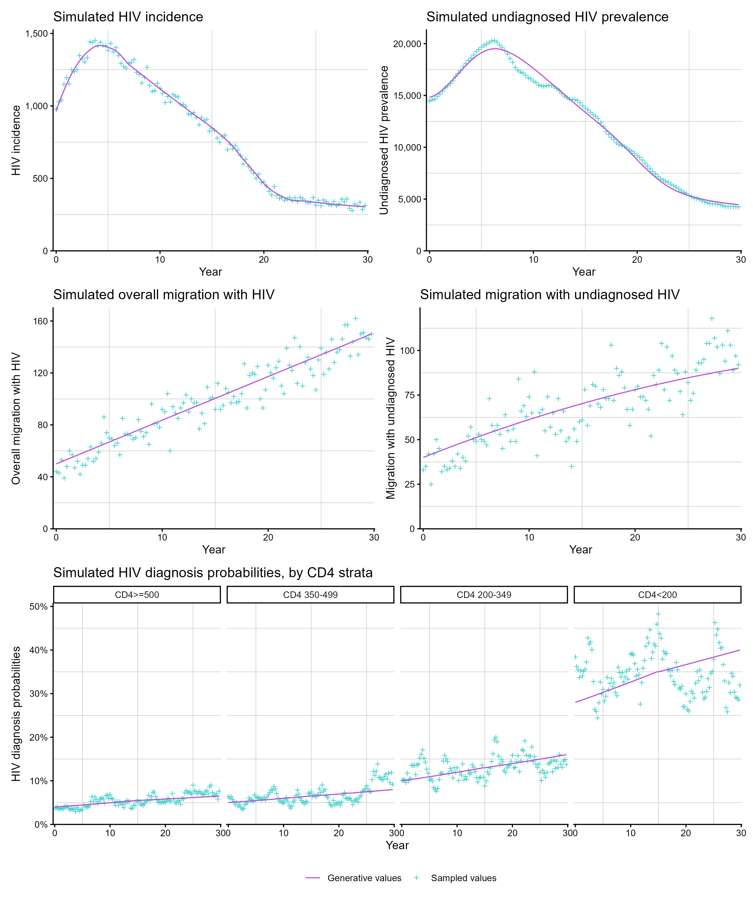
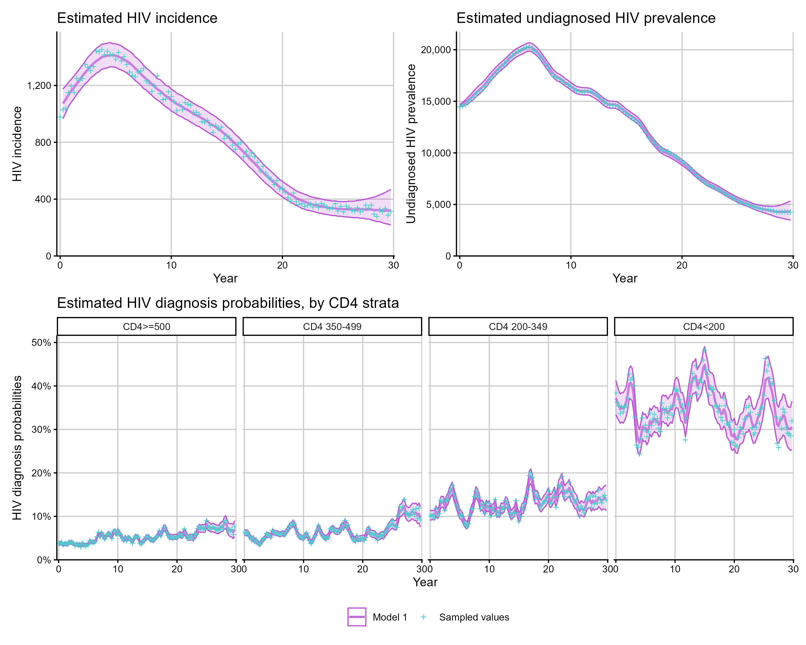
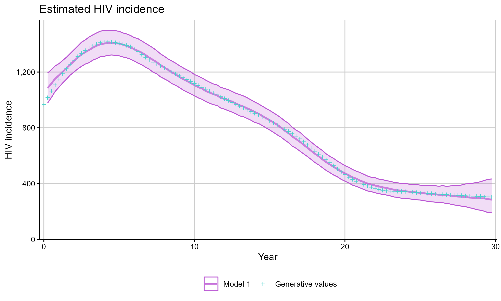
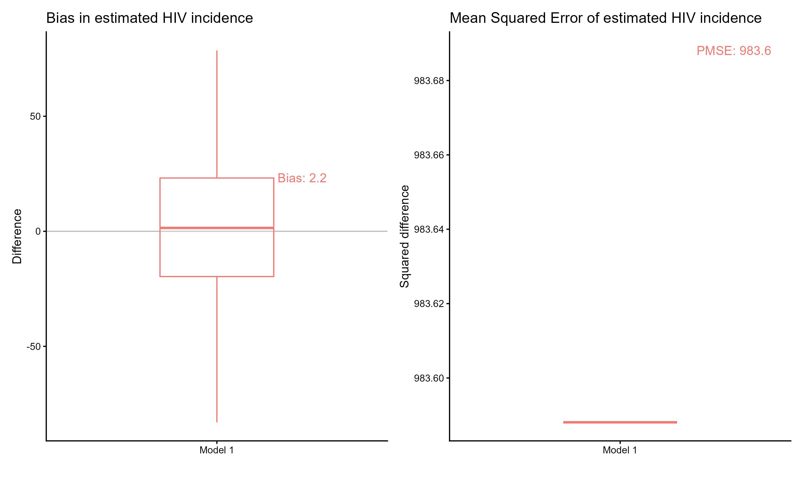
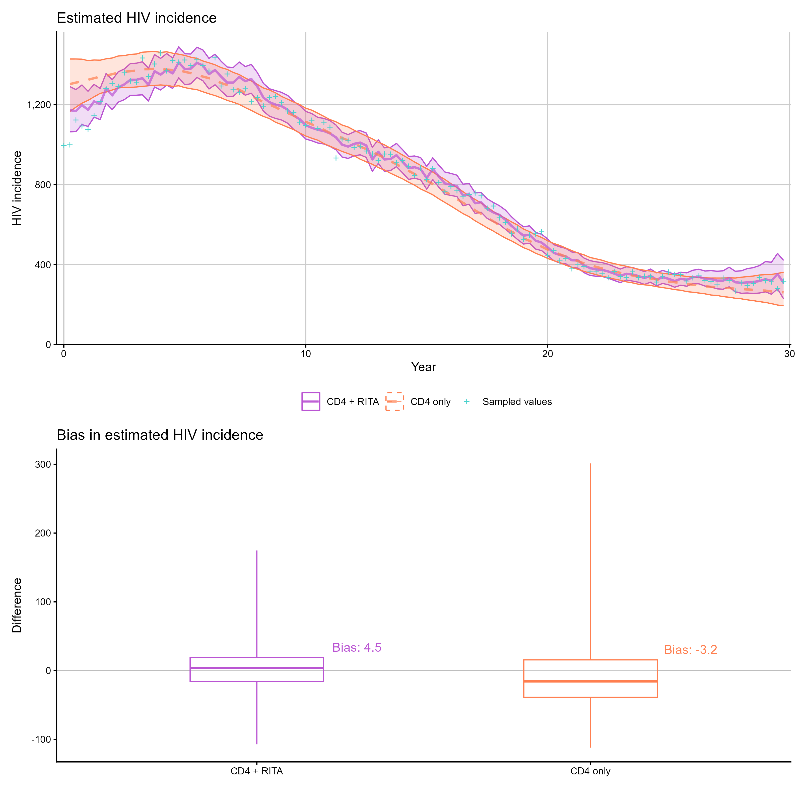
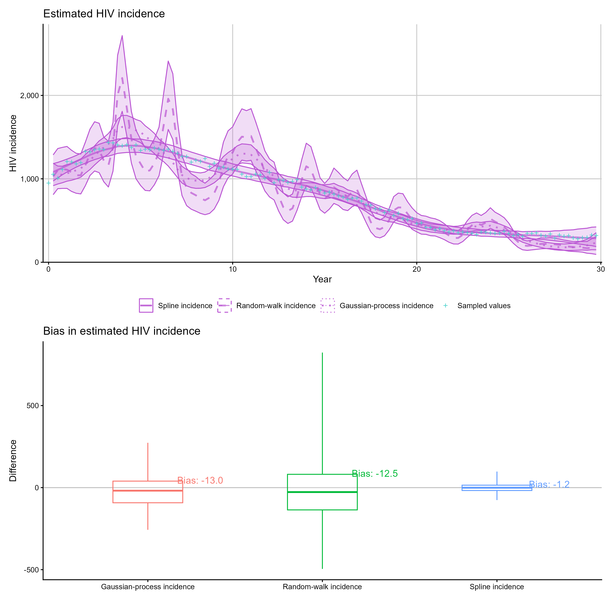
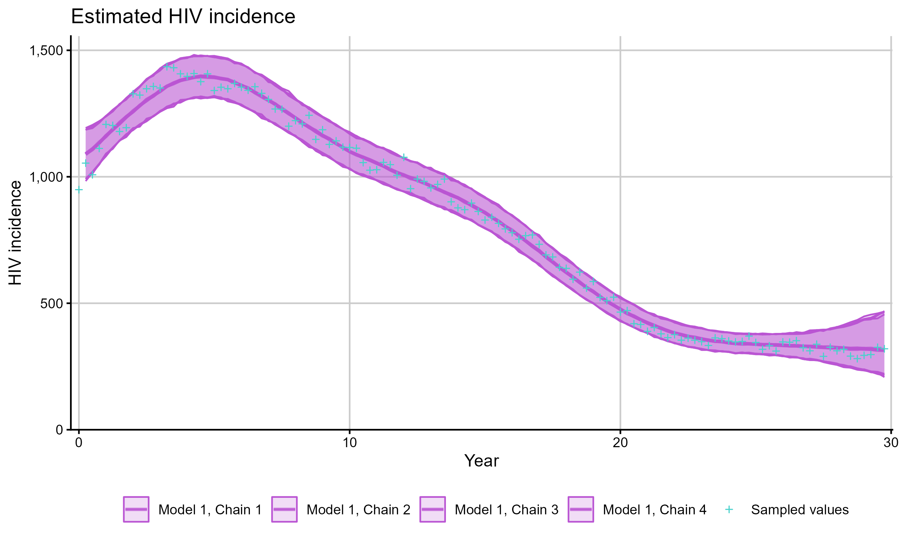

This article covers extracting and visualising results from fitted back-calculation models, including the full set of available quantities, model comparison, and working with real data.
Available quantities
After fitting a model with run_backcalc(), several
quantities can be plotted or extracted. The available quantities depend
on the model type:
All models:
| Quantity | Description |
|---|---|
"incidence" |
Estimated HIV incidence over time |
"undiag_prev" |
Estimated undiagnosed HIV prevalence |
"diagnoses" |
Expected vs observed diagnoses |
"diag_prob" |
Estimated diagnosis probabilities by CD4 stratum |
Migration models (additional):
| Quantity | Description |
|---|---|
"all_migration" |
Estimated overall migration with HIV |
"undiag_migration" |
Estimated undiagnosed migration |
"diag_prob_mig" |
Estimated diagnosis probabilities for migrants by CD4 stratum |
"migration_prob" |
Estimated migration probabilities |
"ratio_abroad_uk" |
Ratio of UK-acquired incidence among people born abroad to that among UK-born people |
"transfers" |
Estimated transfers of care |
"transfers_detected" |
Estimated detected transfers of care |
"detect_prob" |
Estimated detection probabilities |
"migrant_hiv_prevalence" |
Estimated HIV-positive share of the external migration index |
Age-dependent models (additional):
| Quantity | Description |
|---|---|
"incidence_age" |
Incidence stratified by age group |
"undiag_prev_age" |
Undiagnosed prevalence by age group |
"diagnoses_age" |
Diagnoses by age group |
"diag_prob_age" |
Diagnosis probabilities by CD4 stratum and age |
Age-dependent migration models (additional):
| Quantity | Description |
|---|---|
"undiag_migration_age" |
Undiagnosed migration by age group |
"diag_prob_mig_age" |
Migrant diagnosis probabilities by CD4 stratum and age |
Plotting simulated data
Before fitting, simulated quantities can be inspected with
plot_simulations():
sim_diags <- simulate_diagnoses(sim_type = "combo_3", migration = TRUE)
p1 <- plot_simulations(sim_diags, quantity = "incidence")
p2 <- plot_simulations(sim_diags, quantity = "undiag_prev")
p3 <- plot_simulations(sim_diags, quantity = "all_migration")
p4 <- plot_simulations(sim_diags, quantity = "undiag_migration")
p5 <- plot_simulations(sim_diags, quantity = "diag_prob")
(p1 + p2) / (p3 + p4) / p5
Plotting model estimates
plot_estimates() shows posterior median and 95% credible
intervals. When simulated data is present, the true values are shown for
comparison:
hiv_list <- run_backcalc(sim_diags)
p1 <- plot_estimates(hiv_list, quantity = "incidence")
p2 <- plot_estimates(hiv_list, quantity = "undiag_prev")
p3 <- plot_estimates(hiv_list, quantity = "diag_prob")
(p1 + p2) / p3
By default, plotting and summary diagnostics compare fitted values
with the sampled realisation from the simulation. To compare against the
generative expectation from a particular simulation seed instead, set
sim_comparison = "generative":
plot_estimates(
hiv_list,
quantity = "incidence",
sim_comparison = "generative"
)
The same argument is available in bias_plot() and
mse_plot().
Extracting estimates as data
Use get_estimates() to obtain the posterior summary as a
tibble for custom analysis:
inc_df <- get_estimates(hiv_list, quantity = "incidence")
head(inc_df)# A tibble: 6 × 7
year `2.5%` `50%` mean `97.5%` group iteration
<dbl> <dbl> <dbl> <dbl> <dbl> <chr> <int>
1 0 0 0 0 0 Model 1 1
2 0.25 966 1073 1072. 1175 Model 1 1
3 0.5 1006. 1101 1102. 1196 Model 1 1
4 0.75 1052 1134. 1135. 1222 Model 1 1
5 1 1082 1162 1161. 1244 Model 1 1
6 1.25 1108 1186 1187. 1267 Model 1 1Extracting simulated quantities
Use extract_simulated_quantity() to extract the true
simulated values for comparison:
sim_inc <- extract_simulated_quantity(sim_diags, quantity = "incidence")
head(sim_inc)# A tibble: 6 × 3
value year group
<dbl> <dbl> <chr>
1 978 0 Generative values
2 1029 0.25 Generative values
3 1039 0.5 Generative values
4 1149 0.75 Generative values
5 1195 1 Generative values
6 1152 1.25 Generative valuesUse extract_real_data() to extract the observed data
used for fitting:
obs <- extract_real_data(hiv_list, quantity = "diagnoses")
head(obs)# A tibble: 6 × 3
value year group
<dbl> <dbl> <chr>
1 984 0 Observed values
2 966 0.25 Observed values
3 1008 0.5 Observed values
4 929 0.75 Observed values
5 990 1 Observed values
6 939 1.25 Observed valuesBias and MSE
When fitting to simulated data, bias_plot() shows how
much the model over- or under-estimates each quantity and
mse_plot() summarises mean squared error across one or more
simulated fits:
p1 <- bias_plot(list(hiv_list), quantity = "incidence")
p2 <- mse_plot(list(hiv_list), quantity = "incidence")
p1 + p2
Comparing two models
bias_plot() and mse_plot() accept a named
list of models for side-by-side comparison:
sim_diags <- simulate_diagnoses(sim_type = "combo_3", rita = TRUE)
model_rita <- run_backcalc(sim_diags)
sim_cd4 <- sim_remodel(sim_diags, rita = FALSE)
model_cd4 <- run_backcalc(sim_cd4, rita = FALSE)
p1 <- plot_estimates(
model_rita,
hiv_list_2 = model_cd4,
quantity = "incidence",
model_1_name = "CD4 + RITA",
model_2_name = "CD4 only"
)
p2 <- bias_plot(
list("CD4 + RITA" = model_rita, "CD4 only" = model_cd4),
quantity = "incidence"
)
p1 / p2
Comparing multiple models
Pass a list of model fits to compare more than two models simultaneously:
sim_diags <- simulate_diagnoses(
sim_type = "combo_3",
sim_seed = 123
)
models <- list(
"Spline incidence" = run_backcalc(
sim_diags,
inf_model = 1, diag_model = 1, model_seed = 123
),
"Random-walk incidence" = run_backcalc(
sim_diags,
inf_model = 2, diag_model = 1, model_seed = 123
),
"Gaussian-process incidence" = run_backcalc(
sim_diags,
inf_model = 3, diag_model = 1, model_seed = 123
)
)
p1 <- plot_estimates(models, quantity = "incidence")
p2 <- bias_plot(models, quantity = "incidence")
p1 / p2
Working with real data
When fitting to real (non-simulated) data, plotting and extraction
functions still work — the simulated truth overlay is simply omitted.
The stan_data object should contain the diagnosis arrays
required for the chosen model, with matching migration,
rita, and age flags supplied to
run_backcalc().
hiv_list <- run_backcalc(
real_stan_data,
migration = TRUE,
rita = TRUE,
age = FALSE
)
plot_estimates(hiv_list, quantity = "incidence")
plot_estimates(hiv_list, quantity = "diagnoses")
extract_real_data(hiv_list, quantity = "diagnoses")Per-chain results
For chain-specific estimates, set chain_results = TRUE
in run_backcalc() to obtain separate posterior summaries
for each chain. A small number of iterations are used in the example
below to demonstrate poor convergence behavior.
hiv_list <- run_backcalc(
sim_diags,
chain_results = TRUE,
iter_warmup = 50,
iter_sampling = 50
)
plot_estimates(hiv_list, quantity = "incidence", chain_results = TRUE)